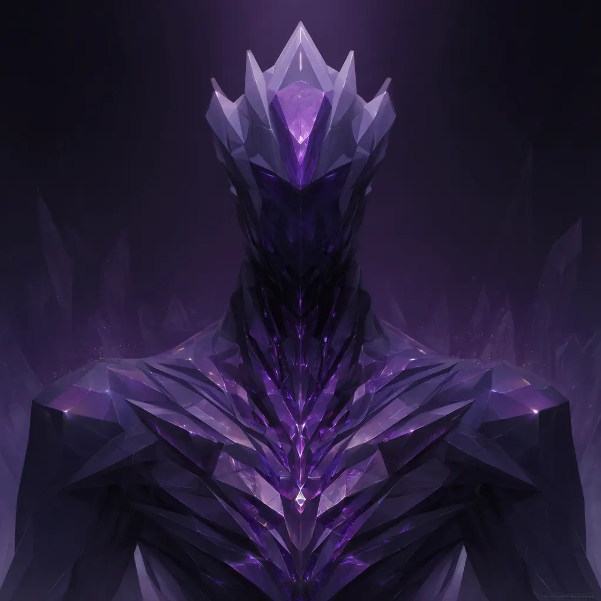

![[Article Title]](../images/Rathkealon.webp)

In the vast tapestry of Myranosia's history, few forces have shaped the world as profoundly as this ancient power. Born from the primordial dance between creation and destruction, it stands as a testament to the delicate balance that sustains all existence. Scholars across the ages have studied its mysteries, yet its true nature remains elusive, wrapped in layers of myth and legend.
The origins trace back to the first moments after the Void birthed the twins. When Myria's creative force collided with Nos's unraveling touch, ripples spread through the nascent cosmos. From these ripples emerged the fundamental structures that would define reality itself. Each wave carried with it the potential for infinite possibility, constrained only by the eternal rhythm of making and unmaking.
Throughout the ages, mortals have sought to understand and harness this power. Some succeeded, becoming legends whispered in taverns and temples alike. Others failed, their hubris serving as cautionary tales for those who would follow. Yet the allure remains, drawing seekers and scholars like moths to a flame, each hoping to unlock secrets that have eluded countless generations before them.